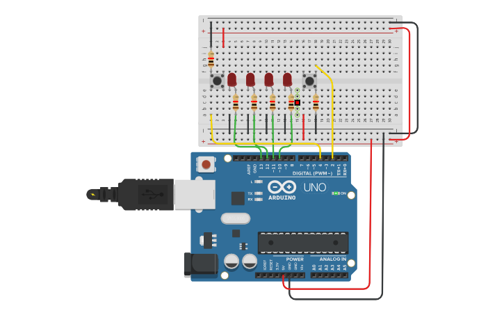

PROJECT 18: DIGITAL TUG OF WAR
High-Speed Button Masher
Mission Brief
It's time to settle the score. In this 2-player game, the center LED acts as the "flag" on a rope. Player 1 (Left) and Player 2 (Right) must mash their buttons as fast as possible to pull the light to their side. The first to pull the light off the edge wins!
Key Components
- Arduino Uno R3
- 2x Push Buttons
- 5x LEDs (Red, Red, Green, Red, Red)
- 7x Resistors (220Ω for LEDs, 10kΩ for Buttons)
- Jumper Wires
Circuit Diagram

Pin Connections
| Component | Arduino Pin |
|---|---|
| Left Button (Player 1) | Pin 2 |
| Right Button (Player 2) | Pin 12 |
| Left LED (1) | Pin 3 |
| Mid-Left LED (2) | Pin 5 |
| Center LED (3) | Pin 6 |
| Mid-Right LED (4) | Pin 9 |
| Right LED (5) | Pin 10 |
Step-by-Step Instructions
- Place the 5 LEDs in a row. Connect their Cathodes (short legs) to GND via resistors.
- Connect the Anodes (long legs) to Pins 3, 5, 6, 9, 10 in order.
- Place the Buttons on opposite sides of the breadboard.
- Connect the Left Button to Pin 2 and the Right Button to Pin 12.
- Crucial: Ensure both buttons have a 10kΩ resistor connecting the signal leg to GND (Pull-Down), or the game will glitch!
- Upload the code below.
Arduino Code
/* Project 18 - Digital Tug of War (Pro Timing)
* Players must mash buttons to pull the light.
* Optimized for fast human reaction times.
*/
// --- CONFIGURATION ---
const int btnLeft = 2; // Player 1
const int btnRight = 12; // Player 2
// LED Pins from Left to Right
const int leds[] = {3, 5, 6, 9, 10};
const int totalLeds = 5;
// --- GAME VARIABLES ---
int position = 2; // Start at Center (Indices: 0, 1, 2, 3, 4)
int lastLeftState = LOW;
int lastRightState = LOW;
bool gameOver = false;
void setup() {
pinMode(btnLeft, INPUT);
pinMode(btnRight, INPUT);
for(int i=0; i P1 Wins
position = 0;
victoryAnimation();
}
else if (position >= totalLeds) {
// Right Overflow -> P2 Wins
position = totalLeds - 1;
victoryAnimation();
}
}
void updateLeds() {
for (int i = 0; i < totalLeds; i++) {
if (i == position) {
digitalWrite(leds[i], HIGH);
} else {
digitalWrite(leds[i], LOW);
}
}
}
void victoryAnimation() {
gameOver = true;
// Rapid flash to celebrate
for(int k=0; k<5; k++) {
digitalWrite(leds[position], HIGH); delay(50);
digitalWrite(leds[position], LOW); delay(50);
}
}
void resetGame() {
position = 2; // Back to center
gameOver = false;
// "Ready? Go!" Animation
for(int i=0; i
How It Works
- Edge Detection vs. Polling:
-
The Problem:
If we just check `if(button == HIGH)`, the code runs so fast that a single button press would count as 100 clicks, sending the light flying instantly. -
The Solution (Rising Edge):
We compare the current state to the previous state. We only move the rope when the button transitions from LOW to HIGH. This counts exactly one "Tug" per press. - Debouncing:
-
Mechanical Noise:
Real buttons vibrate when pressed. We added `delay(20)` inside the press logic. This ignores the tiny vibrations that occur for 20 milliseconds after a press, ensuring clean gameplay.
Expected Output
The center light glows. As Player 1 mashes the left button, the light jumps left. As Player 2 mashes the right button, it jumps right. If both press at the exact same time, the forces cancel out!
What You Learned
- How to build a responsive input system for gaming.
- Using logic to resolve conflicts (what happens if both players press at once?).
- Creating "States" (Game On vs. Game Over).
Next Steps / Extension Ideas
Add a handicap! Give Player 1 a "Power Up" where their button counts for 2 steps instead of 1, or make the "rope" longer by adding more LEDs.